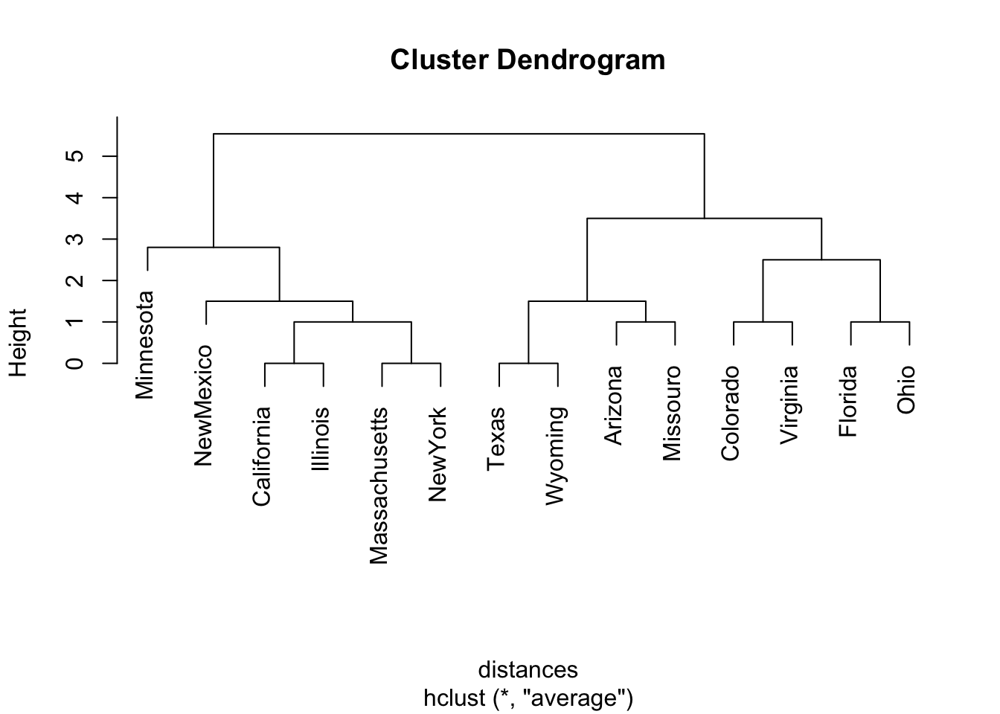

11 Classification and Smoothing
11.1 Classification: Linear Discrinant Analysis
11.1.1 Classification with Fisher’s Linear Discriminant Function
11.1.2 Example: Horseshoe Crab Satellites Revisited
Crabs <- read.table("http://users.stat.ufl.edu/~aa/cat/data/Crabs.dat",
header = TRUE, stringsAsFactors = TRUE)
library(MASS)
lda(y~width + color, data = Crabs)Call:
lda(y ~ width + color, data = Crabs)
Prior probabilities of groups:
0 1
0.3583815 0.6416185
Group means:
width color
0 25.16935 2.725806
1 26.92973 2.279279
Coefficients of linear discriminants:
LD1
width 0.4290351
color -0.5517138fit.lda <- lda(y ~ width + color, prior = c(0.5, 0.5), CV = TRUE, data = Crabs)
# if prior note specified, uses sample proportions in the two categories
xtabs(~Crabs$y + fit.lda$class) # using cross-validation (CV = TRUE) fit.lda$class
Crabs$y 0 1
0 43 19
1 39 72t1df <- as.data.frame.matrix(xtabs(~Crabs$y + fit.lda$class)) %>%
rename("t1_1" = `1`) %>%
rename("t1_0" = `0`) %>%
map_df(rev)
prop <- sum(Crabs$y) / nrow(Crabs)
prop[1] 0.6416185fit <- glm(y ~ width + factor(color), family = binomial, data = Crabs)
predicted <- as.numeric(fitted(fit) > 0.6416185) # predict y=1 when est. > observed probability
t2df <- as.data.frame.matrix(xtabs(~ Crabs$y + predicted)) %>%
rename("t2_1" = `1`) %>%
rename("t2_0" = `0`) %>%
map_df(rev) # purrr::map_df(rev) reverses order of the data frame
Actual <-tibble(Actual = c("y = 1", "y = 0"))
Total <- tibble(Total = c(111, 62))
library(flextable)
suppressMessages(conflict_prefer("compose", "flextable"))
library(dplyr) # for bind_cols()
library(officer) # for fp_border()
# Make analysis table
`Table 11.1` <- bind_cols(Actual, t1df, t2df, Total)
# The header needs blank columns for spaces in actual table.
# The wide column labels use Unicode characters for pi. Those details are
# replaced later with the compose() function.
theHeader <- data.frame(
col_keys = c("Actual", "blank", "t1_1", "t1_0",
"blank2", "t2_1", "t2_0",
"blank3", "Total"),
line1 = c("Actual", "",
rep("Discriminat Analysis", 2), "",
rep("Logistic Regression", 2), "",
"Total"),
line2 = c("Actual", "", "t1_1", "t1_0", "", "t2_1", "t2_0", "", "Total"))
# Border lines
big_border <- fp_border(color="black", width = 2)
# Make the table - compose uses Unicode character
# https://stackoverflow.com/questions/64088118/in-r-flextable-can-complex-symbols-appear-in-column-headings
flextable(`Table 11.1`, col_keys = theHeader$col_keys) %>%
set_header_df(mapping = theHeader, key = "col_keys") %>%
theme_booktabs() %>%
merge_v(part = "header") %>%
merge_h(part = "header") %>%
align(align = "center", part = "all") %>%
empty_blanks() %>%
fix_border_issues() %>%
set_caption(caption = "Classification tables for horseshoe crab data with width and factor color predictors. Logistic model does not match book.") %>%
set_table_properties(width = 1, layout = "autofit") %>%
hline_top(part="header", border = big_border) %>%
hline_bottom(part="body", border = big_border) %>%
# i = 2 refers to second row of column headings
compose(part = "header", i = 2, j = "t1_1",
value = as_paragraph("y\U0302 = 1")) %>%
compose(part = "header", i = 2, j = "t1_0",
value = as_paragraph("y\U0302 = 0")) %>%
compose(part = "header", i = 2, j = "t2_1",
value = as_paragraph("y\U0302 = 1")) %>%
compose(part = "header", i = 2, j = "t2_0",
value = as_paragraph("y\U0302 = 0"))Actual | Discriminat Analysis | Logistic Regression | Total | |||||
ŷ = 1 | ŷ = 0 | ŷ = 1 | ŷ = 0 | |||||
y = 1 | 72 | 39 | 75 | 36 | 111 | |||
y = 0 | 19 | 43 | 19 | 43 | 62 | |||
11.1.3 Discriminant Analysis Versus Logistic Regression
11.2 Classification: Tree-Based Prediction
11.2.1 Classification Trees
11.2.2 Example: A classification Tree for Horseshoe Crab Mating
11.2.3 How Does the Classification Tree Grow?
11.2.4 Pruning a Tree and Checking Prediction Accuracy
11.2.5 Classification Trees Versus Logistic Regression and Discriminant Analysis
11.3 Cluster Analysis for Categorical Responses
11.3.1 Measuring Dissimilarity Between Observations
library(flextable)
suppressMessages(conflict_prefer("compose", "flextable"))
library(dplyr) # for bind_cols()
library(officer) # for fp_border()
# Make analysis table
`Table 11.2` <- bind_cols(`Observation 1` = c("1", "0"),
`1` = c("a", "c"),
`0` = c("b", "d"))
# The header needs blank columns for spaces in actual table.
# The wide column labels use Unicode characters for pi. Those details are
# replaced later with the compose() function.
theHeader <- data.frame(
col_keys = c("Observation 1", "blank", "1", "0"),
line1 = c("Observation 1", "",
rep("Observtion 2", 2)),
line2 = c("Observation 1", "", "1", "0"))
# Border lines
big_border <- fp_border(color="black", width = 2)
# Make the table - compose uses Unicode character
# https://stackoverflow.com/questions/64088118/in-r-flextable-can-complex-symbols-appear-in-column-headings
flextable(`Table 11.2`, col_keys = theHeader$col_keys) %>%
set_header_df(mapping = theHeader, key = "col_keys") %>%
theme_booktabs() %>%
merge_v(part = "header") %>%
merge_h(part = "header") %>%
align(align = "center", part = "all") %>%
empty_blanks() %>%
fix_border_issues() %>%
set_caption(caption = "Cross-classification of two observtions on p binary response variables where p = (a + b + c + d)") %>%
set_table_properties(width = .75, layout = "autofit") %>%
hline_top(part="header", border = big_border) %>%
hline_top(part="body", border = big_border) %>%
hline_bottom(part="body", border = big_border) Observation 1 | Observtion 2 | ||
1 | 0 | ||
1 | a | b | |
0 | c | d | |
11.3.2 Hierarchical Clustering Algorithm and Dendrograms
11.3.3 Example: Clustering States on Presidential Elections
Elections <- read.table("http://users.stat.ufl.edu/~aa/cat/data/Elections2.dat",
header = TRUE, stringsAsFactors = TRUE)
names(Elections) <- c("Number", "State", seq(1980, 2016, by =4))
# function to recode "1" to "D" and "0" to "R"
rd <- function(x){
if_else(x == 1, "D", "R")
}
`Table 11.3` <- Elections %>%
select(-"Number") %>%
mutate(across(where(is.numeric), rd))
knitr::kable(`Table 11.3`)| State | 1980 | 1984 | 1988 | 1992 | 1996 | 2000 | 2004 | 2008 | 2012 | 2016 |
|---|---|---|---|---|---|---|---|---|---|---|
| Arizona | R | R | R | R | D | R | R | R | R | R |
| California | R | R | R | D | D | D | D | D | D | D |
| Colorado | R | R | R | D | R | R | R | D | D | D |
| Florida | R | R | R | R | D | R | R | D | D | R |
| Illinois | R | R | R | D | D | D | D | D | D | D |
| Massachusetts | R | R | D | D | D | D | D | D | D | D |
| Minnesota | D | D | D | D | D | D | D | D | D | D |
| Missouro | R | R | R | D | D | R | R | R | R | R |
| NewMexico | R | R | R | D | D | D | R | D | D | D |
| NewYork | R | R | D | D | D | D | D | D | D | D |
| Ohio | R | R | R | D | D | R | R | D | D | R |
| Texas | R | R | R | R | R | R | R | R | R | R |
| Virginia | R | R | R | R | R | R | R | D | D | D |
| Wyoming | R | R | R | R | R | R | R | R | R | R |
Elections <- read.table("http://users.stat.ufl.edu/~aa/cat/data/Elections2.dat",
header = TRUE, stringsAsFactors = TRUE)
distances <- dist(Elections[, 3:12], method = "manhattan")
#manhattan measure dissimilarity by no. of election outcomes that differ
democlust <-hclust(distances, "average") # hierarchical clustering
plot(democlust, labels = Elections$state)
Registered S3 method overwritten by 'gplots':
method from
reorder.factor gdata11.4 Smoothing: Generalized Additive Models
11.4.1 Generalized Additive Models
\[g(\mu_i) = s_1(X_{i1}) + s_2(X_{i2}) + \dots + s_p(X_{ip}),\]
11.4.2 Example: GAMs for Horseshoe Crab Data
11.4.3 How Much Smoothing? The Bias/Variance Tradeoff
11.4.4 Example: Smoothing to Portray Probability of Kyphosis
Kyphosis <- read.table("http://users.stat.ufl.edu/~aa/cat/data/Kyphosis.dat",
header = TRUE, stringsAsFactors = TRUE)
Kyphosis %>%
filter(row_number() %in% c(1, n())) x y
1 12 1
2 206 0gam.fit1 <- gam(y~ s(x, df=1), family = binomial, data = Kyphosis) # linear complexity
gam.fit2 <- gam(y~ s(x, df=2), family = binomial, data = Kyphosis) # quadratic
gam.fit3 <- gam(y~ s(x, df=3), family = binomial, data = Kyphosis) # cubic
anova(gam.fit1, gam.fit2, gam.fit3)Analysis of Deviance Table
Model 1: y ~ s(x, df = 1)
Model 2: y ~ s(x, df = 2)
Model 3: y ~ s(x, df = 3)
Resid. Df Resid. Dev Df Deviance Pr(>Chi)
1 38 54.504
2 37 49.216 0.99988 5.2879 0.02147 *
3 36 48.231 1.00017 0.9852 0.32097
---
Signif. codes: 0 '***' 0.001 '**' 0.01 '*' 0.05 '.' 0.1 ' ' 111.5 Regularization for High-Dimensional Categorical Data (Large p)
11.5.1 Penalized-Likelihood Methods and \(L_q\)-Norm Smoothing
\[L^*(\beta) = L(\beta)-s(\beta),\] \[s(\beta)= \lambda\sum_{j=1}^p|\beta_j|^q\]
11.5.2 Implementing the Lasso
11.5.3 Example: Predicting Option on Abortion with Student Survey
Students <- read.table("http://users.stat.ufl.edu/~aa/cat/data/Students.dat",
header = TRUE, stringsAsFactors = TRUE)
fit <- glm(abor ~ gender + age + hsgpa + cogpa + dhome + dres + tv + sport +
news + aids + veg + ideol + relig + affirm,
family = binomial, data = Students)
# news LR P-value = 0.0003
# ideol LR P-value = 0.0010
summary(fit)
Call:
glm(formula = abor ~ gender + age + hsgpa + cogpa + dhome + dres +
tv + sport + news + aids + veg + ideol + relig + affirm,
family = binomial, data = Students)
Deviance Residuals:
Min 1Q Median 3Q Max
-1.48649 0.00009 0.04055 0.20125 1.97028
Coefficients:
Estimate Std. Error z value Pr(>|z|)
(Intercept) 10.1014276 10.8914049 0.927 0.3537
gender 1.0021615 1.8655342 0.537 0.5911
age -0.0783427 0.1274839 -0.615 0.5389
hsgpa -3.7344482 2.8093160 -1.329 0.1837
cogpa 2.5112750 3.7399060 0.671 0.5019
dhome 0.0005574 0.0006789 0.821 0.4116
dres -0.3388230 0.2953830 -1.147 0.2514
tv 0.2659760 0.2531643 1.051 0.2934
sport 0.0272104 0.2551460 0.107 0.9151
news 1.3868778 0.6986772 1.985 0.0471 *
aids 0.3966764 0.5663706 0.700 0.4837
veg 4.3213535 3.8614639 1.119 0.2631
ideol -1.6377902 0.7892505 -2.075 0.0380 *
relig -0.7245665 0.7820724 -0.926 0.3542
affirm -2.7481550 2.6898822 -1.022 0.3069
---
Signif. codes: 0 '***' 0.001 '**' 0.01 '*' 0.05 '.' 0.1 ' ' 1
(Dispersion parameter for binomial family taken to be 1)
Null deviance: 62.719 on 59 degrees of freedom
Residual deviance: 21.368 on 45 degrees of freedom
AIC: 51.368
Number of Fisher Scoring iterations: 9[1] 0.0001566051library(tidyverse)
Students <- read.table("http://users.stat.ufl.edu/~aa/cat/data/Students.dat",
header = TRUE, stringsAsFactors = TRUE)
# explanatory variables for lasso
x <- with(Students, cbind(gender, age, hsgpa, cogpa, dhome, dres, tv, sport,
news, aids, veg, ideol, relig, affirm))
abor <- Students$abor
library(glmnet)Loaded glmnet 4.0-2set.seed(1)
est <- cv.glmnet(x, abor, alpha = 1, family = "binomial",
type.measure= "class") # , maxit=1000000000)Warning: from glmnet Fortran code (error code -85); Convergence for 85th lambda
value not reached after maxit=100000 iterations; solutions for larger lambdas
returned# this is a random variable changes from run to run. It is 0.0661 in the book.
est$lambda.min # best lambda by 10-fold cross-validation [1] 0.05000413# also a random variable. It is 0.1267 in the book.
theEst <- est$lambda.1se # lambda suggested by one-standard-error rule
theEst[1] 0.0796207115 x 1 sparse Matrix of class "dgCMatrix"
s0
(Intercept) 2.3671144
gender .
age .
hsgpa .
cogpa .
dhome .
dres .
tv .
sport .
news .
aids .
veg .
ideol -0.2599409
relig -0.1831115
affirm . 15 x 1 sparse Matrix of class "dgCMatrix"
s0
(Intercept) 2.66049060
gender .
age .
hsgpa .
cogpa .
dhome .
dres .
tv .
sport .
news 0.08634866
aids .
veg .
ideol -0.37767205
relig -0.32335761
affirm .
Call:
glm(formula = abor ~ ideol + relig + news, family = binomial,
data = Students)
Deviance Residuals:
Min 1Q Median 3Q Max
-2.29381 0.00082 0.10156 0.33555 1.65503
Coefficients:
Estimate Std. Error z value Pr(>|z|)
(Intercept) 3.5205 1.2513 2.814 0.00490 **
ideol -1.2515 0.4671 -2.679 0.00738 **
relig -0.7198 0.4982 -1.445 0.14854
news 1.1292 0.4574 2.469 0.01356 *
---
Signif. codes: 0 '***' 0.001 '**' 0.01 '*' 0.05 '.' 0.1 ' ' 1
(Dispersion parameter for binomial family taken to be 1)
Null deviance: 62.719 on 59 degrees of freedom
Residual deviance: 29.791 on 56 degrees of freedom
AIC: 37.791
Number of Fisher Scoring iterations: 7
Call:
glm(formula = abor ~ ideol + relig + news, family = binomial,
data = Students)
Deviance Residuals:
Min 1Q Median 3Q Max
-2.29381 0.00082 0.10156 0.33555 1.65503
Coefficients:
Estimate Std. Error z value Pr(>|z|)
(Intercept) 3.5205 1.2513 2.814 0.00490 **
ideol -1.2515 0.4671 -2.679 0.00738 **
relig -0.7198 0.4982 -1.445 0.14854
news 1.1292 0.4574 2.469 0.01356 *
---
Signif. codes: 0 '***' 0.001 '**' 0.01 '*' 0.05 '.' 0.1 ' ' 1
(Dispersion parameter for binomial family taken to be 1)
Null deviance: 62.719 on 59 degrees of freedom
Residual deviance: 29.791 on 56 degrees of freedom
AIC: 37.791
Number of Fisher Scoring iterations: 711.5.4 Why Shrink ML Estimates Toward 0?
11.5.5 Issues In variable Selection (Dimension Reduction)
11.5.6 Controlling the False Discovery Rate
pvals <- c(0.0001, 0.0004, 0.0019, 0.0095, 0.020, 0.028, 0.030, 0.034,
0.046, 0.32, 0.43, 0.57, 0.65, 0.76, 1.00)
p.adjust(pvals, method = c("bonferroni")) [1] 0.0015 0.0060 0.0285 0.1425 0.3000 0.4200 0.4500 0.5100 0.6900 1.0000
[11] 1.0000 1.0000 1.0000 1.0000 1.0000 [1] 0.00150000 0.00300000 0.00950000 0.03562500 0.06000000 0.06375000
[7] 0.06375000 0.06375000 0.07666667 0.48000000 0.58636364 0.71250000
[13] 0.75000000 0.81428571 1.00000000